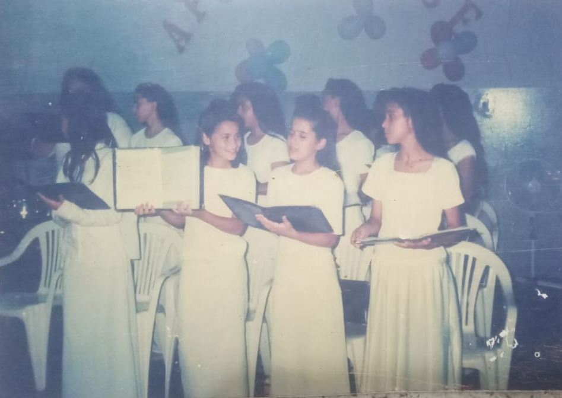
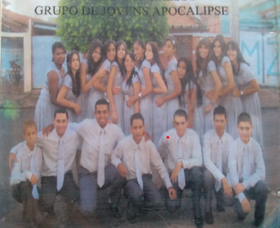
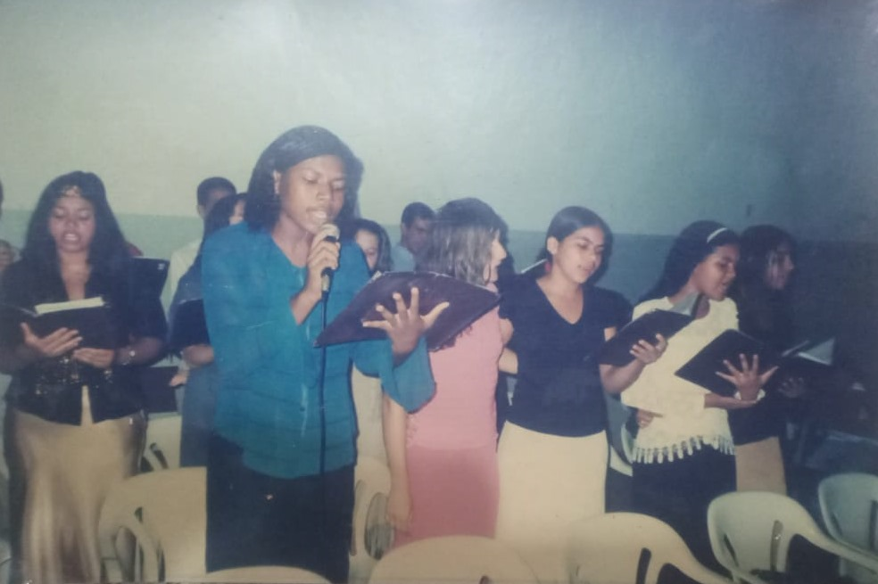

História da União Jovem
Início
O grupo "União Jovem", antes conhecida como "Apocalipse," foi fundado em 1999, na recente Igreja Ceifeiros da Ultima Hora, no interior de São Paulo, na cidade de Andradina. A ideia surgiu de um grupo de jovens que desejavam criar um espaço de adoração, compartilhando suas experiências de fé e oferecendo apoio mútuo. Sob a liderança de jovens e pastores e com o incentivo de alguns líderes da igreja, o grupo realizou sua primeira reunião, com apenas alguns participantes.


Apocalipse?
Isso mesmo! O grupo inicialmente tinha o nome de "Apocalipse", determinado pelos próprios pastores da igreja. Naquela época, cada igreja do grupo I. C. U. H (Igreja Ceifeiros da Ultima Hora), podia escolher as cores que seriam usadas no congresso, o nome do grupo e o hino que cantariam no Congresso, que acontece anualmente. Consequentemente, nos Congressos da I. C. U. H., cada grupo de jovens de cada igreja se apresentavam, o que estendia demais no horário do culto.Resolução
Foi então, que o pastor presidente Álvaro decidiu padronizar o nome "União Jovem" e as cores "Branco" e "Preto", para representar todo o grupo de jovens da I. C. U. H.. Dessa forma, todos os jovens das igrejas da mesma denominação passaram a apresentar-se simultaneamente como um único grupo, cantando o hino escolhido pelo lider do grupo, da igreja ao qual faria-se o Congresso.


Mudanças
Ao longo de seus primeiros anos de existência, o impacto da agora chamada "União Jovem", foi notável tanto na vida espiritual quanto social de seus membros. Muitos jovens afirmam que encontraram propósito, amizades verdadeiras e um relacionamento mais profundo com Deus por meio do grupo. Relatos de pessoas da época, como a Pra. Neuza, mostram o como o grupo era caracterizado pela sede de adoração, marcados pelos evangelismos, vigílias e cultos frequentes.
Crescimento
Com o passar dos anos, o União Jovem cresceu significativamente. No início, as reuniões eram simples, envolvendo estudos bíblicos e orações. Porém, logo começaram a organizar eventos maiores, como acampamentos, vígilias, encontros regionais e projetos missionários. O grupo também expandiu seu alcance para atrair adolescentes e jovens de outras igrejas e comunidades, chegando a reunir vários participantes em um único evento, intitulado "Young Space" em 2023.Desafio
Ao longo dos anos, a liderança do grupo passou por várias transições. Após o pastor Eduardo, jovens membros que cresceram dentro da União Jovem assumiram posições de liderança. Um dos maiores desafios enfrentados pelo grupo foi em 2015, quando muitos membros se mudaram para outras igrejas, enfraquecendo as atividades. No entanto, os líderes remanescentes usaram a fé para manter a conexão com os membros e atrair novos participantes, garantindo a continuidade do grupo.Eventos
A União Jovem realiza atividades diversificadas que incluem estudos bíblicos semanais, momentos de louvor, e reuniões voltados para o desenvolvimento pessoal e espiritual. Podemos usar de exemplos o "Cine Jovem", "Espaço Jovem" e "Papo Jovem", eventos de iniciativa espiritual, que ajudou dezenas de jovens a se reencontrarem na fé e entrarem em comunhão. Além disso, o grupo organiza anualmente o Congresso de Jovens, que se tornou um marco na história da Igreja.